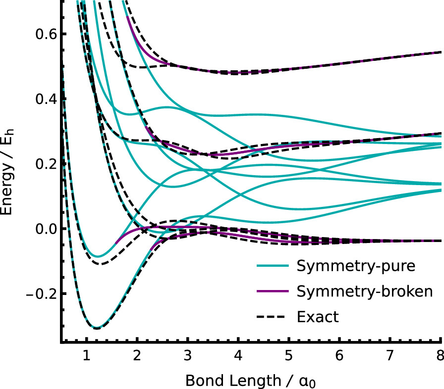
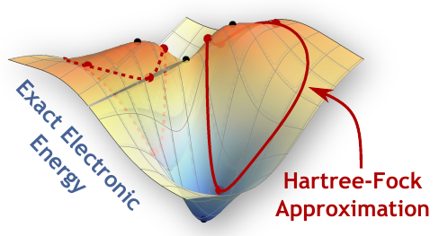
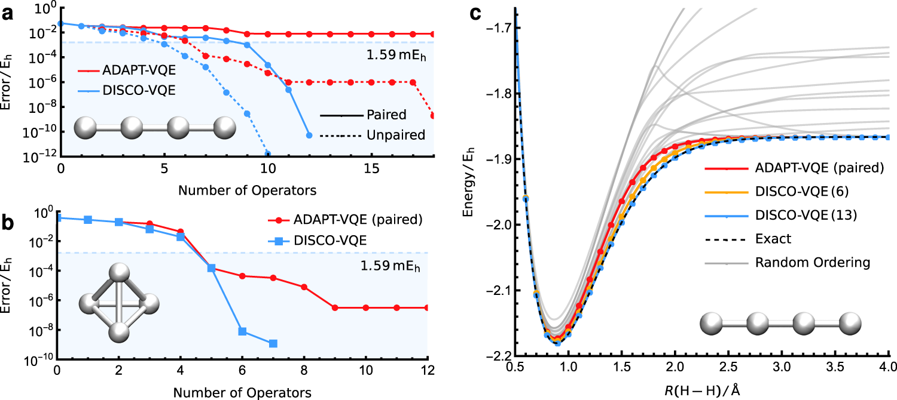
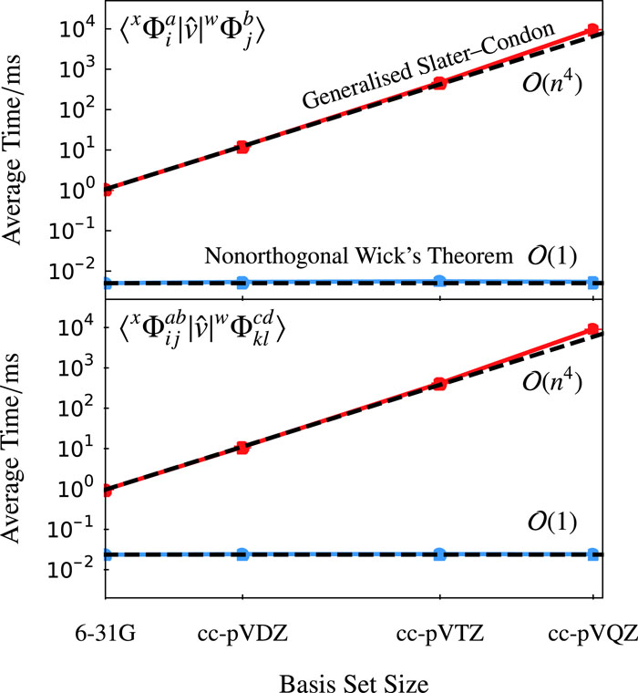
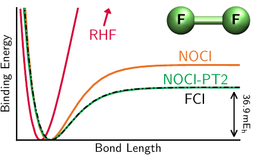
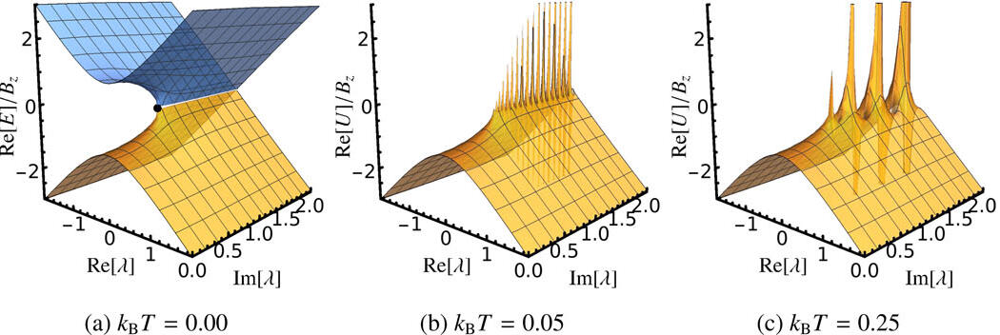
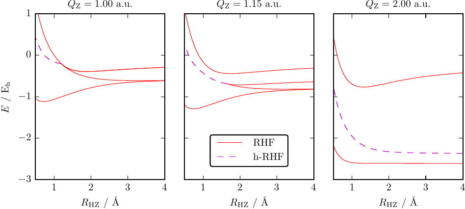
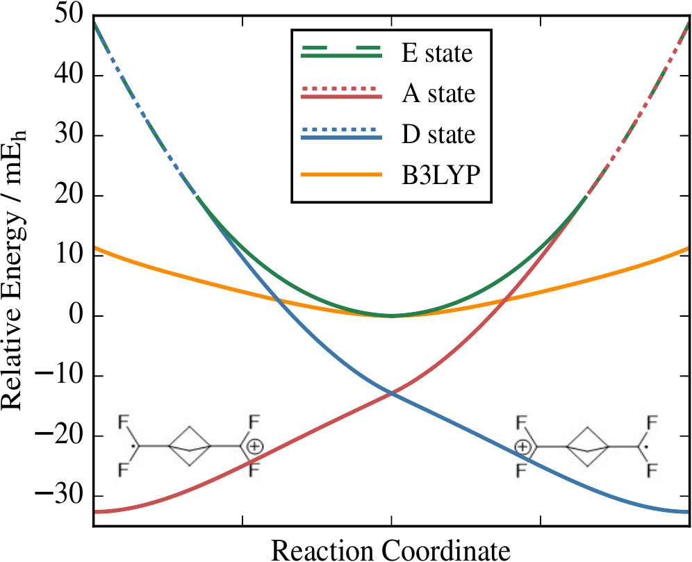

Research
Major Themes
- Energy Landscapes for Electronic Structure
- Unitary Product States for Quantum Computing
- Nonorthogonal Configuration Interaction for Strong Correlation
- Quantum Chemistry in the Complex Plane
- Holomorphic Hartree–Fock Theory
Energy Landscapes for Electronic Structure
We are developing a new way to interpret molecular electronic energy levels as stationary points of an energy landscape, rather like a mountain range. The lowest-energy level corresponds to the valley bottom, while higher-energy levels are represented as high mountain passes and summit peaks. These higher-energy stationary points can provide bespoke representations of electronic excited states.
 
Excited electronic states in molecules have traditionally been predicted by considering the response of an approximate ground state to an external field, or by solving large matrix eigenvalue problems. These approaches are typically biased towards the ground-state properties, limiting the accuracy of the corresponding excited-state models. We are exploring an entirely new perspective whereby excited-state approximations exist as higher-energy stationary points of a high-dimensional electronic energy surface. These higher-energy stationary points correspond to individually optimised “state-specific” wave functions and can provide a more accurate representation of excited-state properties. By understanding the structure of this high-dimensional energy surface for different electronic structure approximations, we hope to develop new computationally efficient algorithms to locate state-specific representations of excited states.
Our energy landscape perspective can also help us understand where and why simple electronic structure models break down. For example, the failure of the mean-field Hartree–Fock approximation in the presence of strong electron coupling corresponds to the formation of symmetry-broken local minima on the energy surface. Our work has highlighted the prevalence of symmetry breaking in both mean-field and multi-configurational wave functions, showing how this phenomenon is driven by the mathematical structure of approximate models and the nature of electronic entanglement in ground and excited states. In the future, our aim is to directly compare these idealised model energy surfaces to the exact landscape to understand the failures of current methods and identify new ways to improve our computational models.
Learn More:
- Excited States, Symmetry Breaking, and Unphysical Solutions in State-Specific CASSCF Theory A. Marie and H. G. A. Burton, J. Phys. Chem. A 127, 4538, (2023)
- Energy Landscape of State-Specific Electronic Structure Theory H. G. A. Burton, J. Chem. Theory Comput. 18, 1512, (2022)
- Variations of the Hartree–Fock fractional-spin error for one electron H. G. A. Burton, C. Marut, T. J. Daas, P. Gori-Giorgi, and P.-F. Loos, J. Chem. Phys. 155, 054107, (2021)
-
Hartree–Fock Critical Nuclear Charge in Two-Electron Atoms
H. G. A. Burton J. Chem. Phys. 154, 111103, (2021) -
Energy Landscapes for Electronic Structure
H. G. A. Burton and D. J. Wales J. Chem. Theory Comput. 17, 151, (2021)
Unitary Product States for Quantum Computing
We are reimagining how to model electronic wave functions using future quantum technologies. Quantum computers promise to transform computational chemistry by representing an electronic state using quantum bits that behave quantum mechanically. However, new mathematical approximations are required to maximise our use of this emerging technology. We are tackling this frontier challenge by characterising how quantum computers systematically encode electronic states in molecules.

Quantum chemistry is expected to be one of the first areas of research to significantly benefit from quantum computers. By modelling an electronic state as a superposition of quantum bits, we can overcome the exponential scaling of high accuracy electronic simulations. Among the most promising “near-term” approaches is the variational quantum eigensolver (VQE), which represents the electronic state as a parametrised quantum circuit and identifies the best approximation by minimising the energy. However, since quantum computers follow different mathematics to classical computers, we must redesign our mathematical models for electronic states. The challenge is figuring out how high-accuracy wave functions can be represented while preserving the physical symmetries of electronic states and ensuring that the model can be efficiently implemented using a small number of quantum gates.
Recent research has shown that an exact wave function can be represented using a sequence of quantum gates that entangles up to two electrons at a time. However, the accuracy is highly sensitive to the ordering of quantum gates and no consensus has been reached on how to define this ordering a priori. We have introduced a discrete global optimisation algorithm (DISCO-VQE) that identifies the best choice and ordering of quantum gates, revealing that highly-accurate models can be defined with shallow quantum circuits. In the future, our aim is to translate these findings into a systematic hierarchy of theoretical models that are fit for purpose in the quantum age of computing.
Learn More:
- Exact electronic states with shallow quantum circuits from global optimisation H. G. A. Burton, D. Marti-Dafcik, D. P. Tew, and D. J. Wales, npj Quantum Inf. 9, 75, (2023)
Nonorthogonal Configuration Interaction for Strong Correlation
The energy of molecules near their stable structure is often quite easy to predict by assuming that electron particles move independently of each other. However, when a bond is stretched or an electron is unpaired, the positions of different electrons become strongly correlated. This correlated motion can become frozen in multiple solutions to the independent particle model. We are developing new methods to predict such scenarios by combining these multiple snapshots of correlated electrons.
 
The ground-state of a molecule near its equilibrium structure can usually be predicted with a single mean-field electronic structure approximation such as Hartree–Fock theory. However, this approximation fails catastrophically in the presence of competing electronic configurations, for instance with two unpaired electrons or at the transition state for a reaction. We have found that, when many electronic configurations arise, there are generally multiple solutions to the mean-field approximation which represent the dominant configurations. Taking a linear combination of these multiple solutions in a Nonorthogonal Configuration Interaction (NOCI) expansion can recover qualitatively accurate potential energy surfaces for all molecular structures, allowing reaction profiles to be predicted.
We have recently developed a standardised approach to predicting molecular energy surfaces using NOCI. This approach has been implemented in the new LIBNOCI library available with the Q-Chem software package. We have also introduced a second-order perturbative correction “NOCI-PT2” that provides quantitative accuracy while retaining the computational efficiency and chemical intuition offered by NOCI.
Until now, the future development of nonorthogonal electronic structure theory has been hindered by the complexity of computing nonorthogonal matrix elements between electronic configurations constructed for different sets of orbitals. We have overcome this challenge by deriving a generalised nonorthogonal extension to Wick's theorem, allowing nonorthogonal matrix elements to be computed with the same computational scaling as their orthogonal counterparts. Our approach for future extensions of nonorthogonal methods to multiconfigurational wave functions and correlated methods. This generalised framework has been implemented in the publicly available library LibGNME, providing a community resource for future method development.
Learn More:
- LibGNME: A C++ library for evaluating non-orthogonal matrix elements in electronic structure
-
Generalized Nonorthogonal Matrix Elements. II: Extension to arbitrary excitations
H. G. A. Burton, J. Chem. Phys. 157, 204109, (2023) -
Generalized Nonorthogonal Matrix Elements: Unifying Wick's Theorem and the Slater–Condon Rules
H. G. A. Burton, J. Chem. Phys. 154, 144109, (2021) - LIBNOCI library in Q-Chem
-
Reaching Full Correlation through Nonorthogonal Configuration Interaction: A Second-Order Perturbative Approach
H. G. A. Burton and A. J. W. Thom, J. Chem. Theory Comput. 16, 5586, (2020) -
General Approach for Multireference Ground and Excited States using Nonorthogonal Configuration Interaction
H. G. A. Burton and A. J. W. Thom, J. Chem. Theory Comput. 15, 4851, (2019)
Quantum Chemistry in the Complex Plane
Quantum mechanics is usually considered with mathematically real energies. This leads to the idea that electrons in a molecule can only take particular “discrete” energy levels. We explore the fascinating consequences of allowing the energy to be a complex number. Under this simple mathematical extension, discrete energy levels become unified as one continuous structure to create an entirely new perspective on quantum chemistry.

Electronic energy levels in molecules are conventionally considered as real-valued and discrete, giving “ground” and “excited” states. However, if we mathematically extend our equations to complex numbers — known as analytic continuation — we find that ground and excited states become unified as one continuous energy surface: a Riemann surface. In fact, discrete energy levels only arise by restricting our perspective to real numbers. These remarkable continuous energy surfaces allow a ground-state wave function to be continuously evolved into an excited-state wave function by following a well-defined pathway in the complex-plane. We have discovered the first examples of such pathways within electronic structure theory and we investigating how they can be used to locate state-specific representations of excited states.
We are also interested in the fundamental properties of non-Hermitian extensions to electronic structure methods and how this affects their behaviour on the real axis. For example, the convergence of perturbation theory is controlled by the location of non-Hermitian degeneracies in the complex plane. We have shown how the position of these degeneracies varies for weak or strong electron correlation at both zero- and finite-temperature perturbation theory, and how this complex mathematical structure is related to thermodynamic quantum phase transitions. Furthermore, we have discovered that combined parity-time symmetry in electronic structure can enforce real-valued energies, even for complex non-Hermitian wave functions. We believe that understanding these fundamental properties will allow entirely new electronic structure approximations to be developed.
Learn More:
- Convergence of Møller–Plesset perturbation theory for excited reference states D.-G. Oprea and H. G. A. Burton, Adv. Quantum Chem. 88, 249, (2023)
- Complex analysis of divergent perturbation theory at finite temperature Yi Sun and H. G. A. Burton, J. Chem. Phys. 156, 171101, (2022)
-
Perturbation Theory in the Complex Plane: Exceptional Points and Where to Find Them
A. Marie, H. G. A. Burton, and P.-F. Loos J. Phys. Condes. Matter 33, 283001, (2021) -
Parity-Time Symmetry in Hartree-Fock Theory
H. G. A. Burton, A. J. W. Thom, and P.-F. Loos, J. Chem. Theory Comput. 15, 4374, (2019) -
Complex Adiabatic Connection: A Hidden Non-Hermitian Path from Ground to Excited States
H. G. A. Burton, A. J. W. Thom, and P.-F. Loos, J. Chem. Phys. 150, 041103, (2019)
Holomorphic Hartree–Fock Theory
Simple models of molecules assume that electrons move independently in an effective field created by all other electrons. The algebraic equations for these models can produce multiple solutions that represent different important arrangements of the electrons in a molecule. Surprisingly, these solutions can vanish as atoms are moved, creating sudden jumps in the electronic energy. We have pioneered an algebraic extension that allows each solution to be smoothly continued over all molecular structures.
 
Mean-field approximations such as Hartree–Theory are the bedrock of modern electronic structure theory. These approximations often produce multiple solutions that represent different electron configurations, or ground and excited states. However, these multiple solutions can spontaneously disappear as the molecular structure changes, creating kinks and jumps in the energy surface. We have pioneered Holomorphic Hartree–Fock theory as a way of analytically continuing Hartree–Fock solutions beyond the points at which they vanish. This theory involves removing the complex-conjugate from the Hartree–Fock energy to construct a non-Hermitian complex-analytic function. Every holomorphic solution then exists over all molecular geometries to give a smooth and continuous energy. We have recently extended this approach to Kohn–Sham Density-Functional Theory, allowing the first investigation into how multiple solutions are connected between different exchange-correlation functionals.
Learn More:
-
Towards a Holomorphic Density Functional Theory
R. A. Zarotiadis, H. G. A. Burton, and A. J. W. Thom, J. Chem. Theory Comput. 16, 7400 (2020) -
Holomorphic Hartree-Fock Theory: The Nature of Two-Electron Problems
H. G. A. Burton, M. Gross, and A. J. W. Thom, J. Chem. Theory Comput. 14, 607, (2018) -
Holomorphic Hartree-Fock Theory: An Inherently Multireference Approach
H. G. A. Burton and A. J. W. Thom, J. Chem. Theory Comput. 12, 167, (2016)